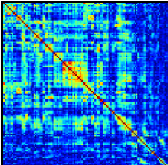
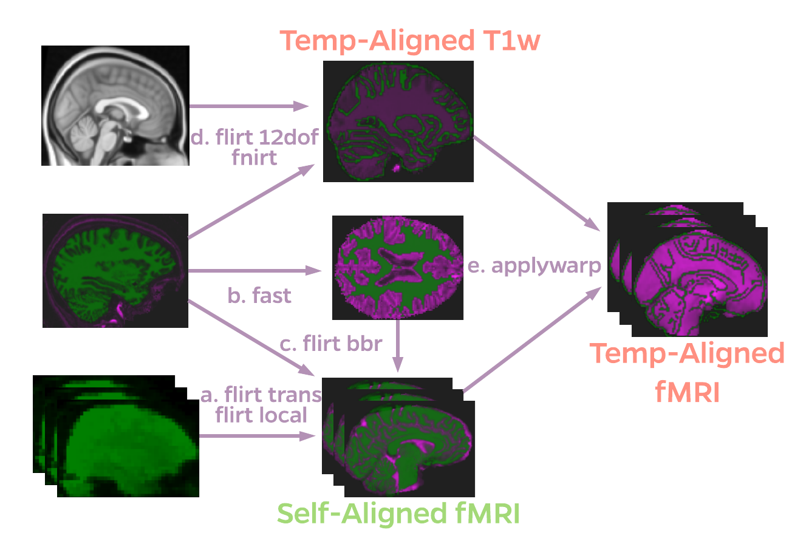
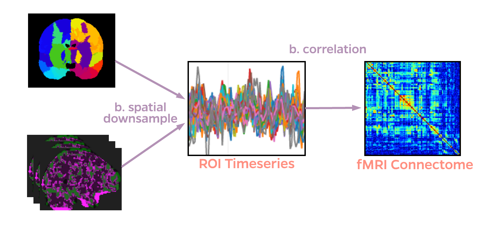
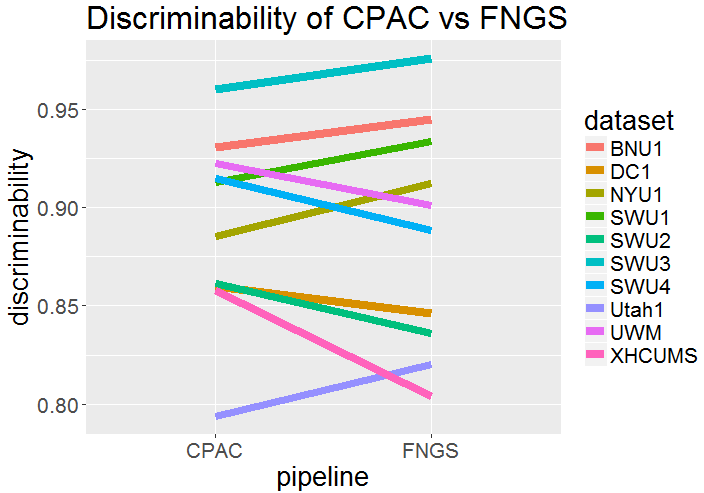

FNGS Pipeline
A Scalable Pipeline for fMRI Connectomics
Created by Eric Bridgeford / Contact: @ebridge2
Functional Neuroimaging offers a Combination of Temporal and Spatial Acuity
- 4D fMRI: 3 spatial dimensions (approx $2mm \times 2mm \times 2mm$) + 1 time dimension (approx $TR=2.5s$)
- view of the dynamic brain at each spatial position
- most other modalities offer only strongly one or the other
Thousands of Processing Options, each offering theoretical desiderata
- Particular pipeline options work well together, and others do not, in a nonconvex fashion
- Best pipelines per dataset might not be globally optimal: necessity for meganalysis
FNGS: A Scalable and Robust Pipelines for fMRI connectomics
- pipeline refined from results of Discriminability optimal pipeline
- Offers local and cloud scaling options, enabling basic meganalysis on clusters or remotes
- Containerized: trivial to deploy
- Offers high-end performance at low computational requirements
Functional Preprocessing removes spatial artifacts


Anatomical Preprocessing enables superior Brain Extraction

Registration Spatially Aligns Scans

Nuisance Correction removes Noise Variables from Signal

Downsampling Yields Computationally Feasible Dimensionality

FNGS is effective on Local or Cloud Infrastructure
- Local
- Single or Multithread depending on how many threads/RAM you have available
- Cloud
- Deployment scripts and web-service to interface with AWS Batch
FNGS Offers Web-based Cloud Deployment

FNGS Offers Superior Computational Performance
| Metric | FNGS | CPAC | fmriprep |
|---|---|---|---|
| execution time (s) | 1560 | 3120 | 40000 |
| $RAM_{mx}$ (GB) | 4.3 | 3.5 | 15.1 |
| $RAM_{avg}$ (GB) | 1.0 | 1.7 | 3.6 |
| $CPU_{avg}$ (threads) | 1.15 | 1.33 | 3.81 |
| $Disk$ (GB) | 1.3 | 2.2 | 12.1 |
... Without Sacrificing Robustness
- FNGS: $\bar{d} = .887$, CPAC: $\bar{d} = .889$
- $p=0.87$, not significant
Future Goals
- FNGS is "tuned" for resting-state fMRI
- Is there a difference with what we would do for task fMRI?
- How can we quantify this? modifications of Signal-Subgraphing
- FNIRT is far from perfect
- Are there better registration models out there? Possibility of LDDMM?